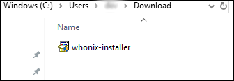
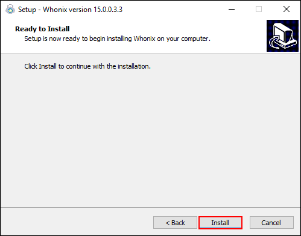
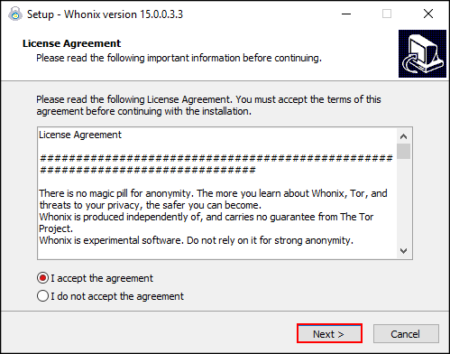
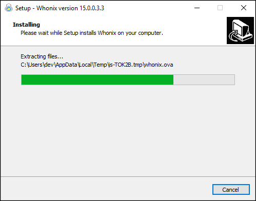
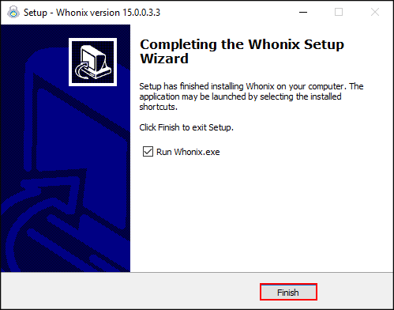
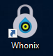
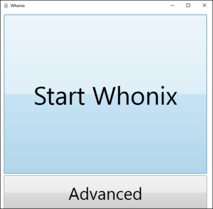
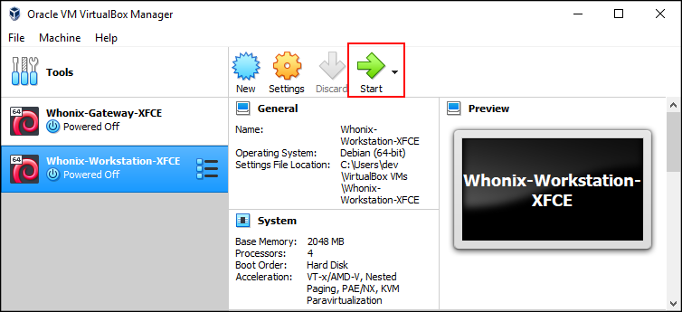
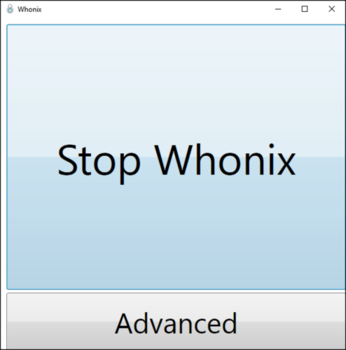
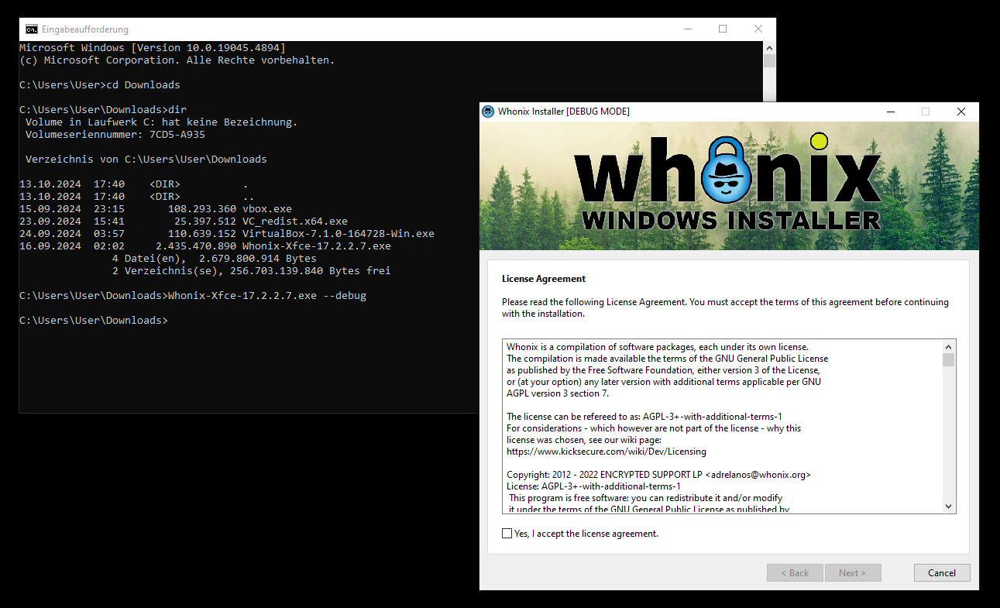

We believe security software like Whonix needs to remain Open Source and independent. Would you help sustain and grow the project? Learn more about our 14 year success story and maybe DONATE!
Dev/Windows StarterDesignDev/researchPrevious page: Dev/Windows StarterIndex page: DesignNext page: Dev/researchWhonix Windows Installer - Testers Only Version
The Whonix Windows Installer streamlines the process of setting up Whonix on VirtualBox. While the earlier method required users to follow instructions on the Whonix for VirtualBox wiki page, this installer makes the entire process more intuitive. Here's an in-depth look at what it does:
Whonix can be easily installed using Whonix Windows Installer.
 Whonix Windows Installer is not yet available. Stay Tuned for news.
Whonix Windows Installer is not yet available. Stay Tuned for news.
 Testers only!
Testers only!
1 Download Whonix
Download the Whonix Installer for Windows.
Optional: Digital signature verification.
- Digital signatures are a tool enhancing download security. They are commonly used across the internet and nothing special to worry about.
- Optional, not required: Digital signatures are optional and not mandatory for using Whonix, but an extra security measure for advanced users. If you've never used them before, it might be overwhelming to look into them at this stage. Just ignore them for now.
- Learn more: Curious? If you are interested in becoming more familiar with advanced computer security concepts, you can learn more about digital signatures here: Verifying Software Signatures
This step requires that you have already downloaded Whonix LXQt Windows Installer. Below is the installer and the PGP OpenPGP signature.
Users who are familiar with OpenPGP verification can go straight to download the signing key and verify the Whonix Windows installer.
Otherwise, for detailed documentation, see Verify Whonix Virtual Machine Images in Windows.
2 Install Whonix
Whonix can be installed by simply running
Whonix-LXQt.exe. When installation is complete,
users will be greeted with the Whonix GUI, which can then be used to
start the VMs. Keep in mind that installation can take up to 15 minutes
to complete, depending on your hardware configuration.
For detailed Whonix Windows Installer instructions, please press the "Learn More" button on the right.
1 Launch Whonix Installer
In the folder where you downloaded the Whonix Windows Installer:
Double "click" Whonix-LXQt-18.2.1.9.exe
Figure: Whonix Windows Installer

2 Start Installation
Figure: Install Whonix

3 Accept License Agreement
Figure: License agreement

4 Wait for File Extraction
Figure: Extracting files

5 Finalized Installation
Figure: Whonix installation complete

6 Done.
Whonix installation is complete.
3 Start Whonix
1 Double click Whonix desktop starter
2 Click Start Whonix.
Figure: Whonix desktop starter

Figure: Whonix Windows Starter

This will start both virtual machines (VM), Whonix-Gateway and Whonix-Workstation.
3 DONE.
Optional: Advanced Start.
1 Double click Whonix desktop starter
2 Click Advanced in Whonix Windows Starter
- When the Advanced button is pressed, the VirtualBox Windows Starter will open and the VMs can be started.
- The VirtualBox interface will provide more granular control of the VMs. From there, users can manage the Whonix VMs or modify VirtualBox settings.
Figure: Start Whonix VM

3 DONE.
Shutdown Whonix.
1 Click Stop Whonix
2 DONE.
Figure: Stop Whonix using Whonix Windows Starter

4 Support the Future of Whonix
Whonix is made possible thanks to the donation of people like you.
Please support the Whonix development with a donation.
Additional information about the Whonix Windows Installer.
Whonix Windows Installer
Question |
Answer |
|---|---|
What is the purpose of the Whonix Windows Installer? |
The Whonix Windows Installer was developed with design goals
focused on providing users with a fast and easy method to install Whonix
in Microsoft Windows. When |
What happens if VirtualBox is already installed? |
When the Whonix Windows Installer is executed, the currently installed VirtualBox package -- if there is one installed on the system -- is removed and the VirtualBox version that comes with Whonix Windows Installer is installed. |
Do I have to use the new Whonix Windows Installer? |
No. You can still manually install VirtualBox and import Whonix by following the instructions on the Whonix for VirtualBox wiki page. |
Can a newer version of VirtualBox be installed after using Whonix Windows Installer? |
Yes. There are no intentional user freedom restrictions. The user is free to install, update or uninstall VirtualBox at any time. |
Is the manual method for VirtualBox installation going to be deprecated? |
There's no such plan as of now. The manual method remains crucial as it offers compatibility with certain Linux distributions not supported by the Whonix Linux Installer. |
Can I use Whonix-Gateway™ CLI in conjunction with Whonix-Workstation™ LXQt? |
Absolutely, find out more here. However, Whonix Windows Installer is only available for Whonix LXQt. The Whonix CLI can be acquired from the Whonix for VirtualBox page. |
Where can I find the main FAQ? |
Check out the Whonix FAQ. |
Development wiki pages? |
|
Troubleshooting
To run Whonix Windows Installer in debug mode, simply append
--debug after the executable when starting up with the
console.
1. Folder navigation.
Navigate to the folder where Whonix-LXQt.exe has been
downloaded.
Note: This is only an example. Adjust this for the folder
where you downloaded Whonix-LXQt.exe.
cd c:\
cd users
cd user
cd downloads
2. Run Whonix-LXQt.exe in debug
mode.
Whonix-LXQt.exe --debug
Figure: Whonix Windows Installer in Debug Mode

Categories: Documentation